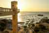

Salvador é a capital do estado da Bahia e foi a primeira capital do Brasil, fundada em 29 de março de 1549 por Tomé de Sousa. Conhecida como a "Capital da Alegria", a metrópole é o grande coração da cultura afro-brasileira, famosa por seu carnaval de rua, culinária marcante e rica herança histórica.
O **Elevador Lacerda** é um dos maiores símbolos da cidade de Salvador e um marco da engenharia brasileira.
